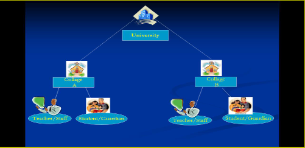

The concept of Academic ERP aims not only at achieving operational excellence in Institutions, but also make its stakeholders, the beneficiaries of the system. As Academic ERP concept provides number of options through which, an Institution can share the information stored with the parents and other stakeholders and make them feel to be a part of the Institution itself.
The University / Board / Council can have all the details along with the marks of the previous classes, of a student, who is appearing for the University / Board / Council exam. It includes the number of modules, proved beneficial to achieve the operational and functional efficiencies, monitoring and optimizing the management processes & operations and enhancing coordination across the various departments in the Institution.